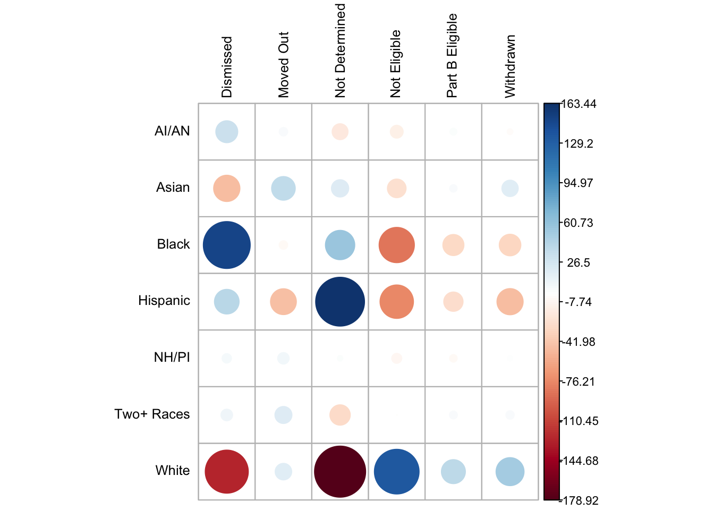
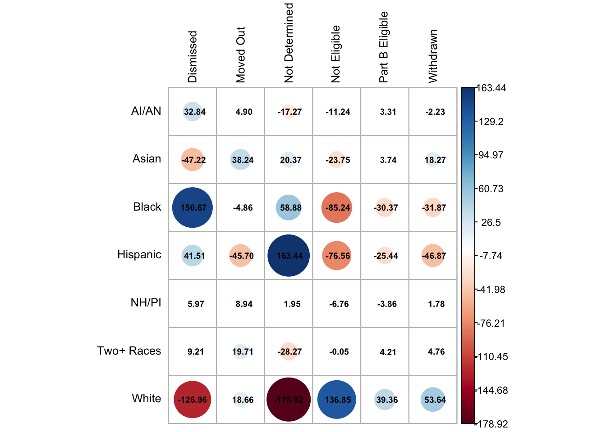

Attaching package: 'kableExtra'
The following object is masked from 'package:dplyr':
group_rows
library(tinytex)library(janitor)
Attaching package: 'janitor'
The following objects are masked from 'package:stats':
chisq.test, fisher.test
library(tidylog)
Attaching package: 'tidylog'
The following objects are masked from 'package:gtsummary':
mutate, select
The following objects are masked from 'package:dplyr':
add_count, add_tally, anti_join, count, distinct, distinct_all,
distinct_at, distinct_if, filter, filter_all, filter_at, filter_if,
full_join, group_by, group_by_all, group_by_at, group_by_if,
inner_join, left_join, mutate, mutate_all, mutate_at, mutate_if,
relocate, rename, rename_all, rename_at, rename_if, rename_with,
right_join, sample_frac, sample_n, select, select_all, select_at,
select_if, semi_join, slice, slice_head, slice_max, slice_min,
slice_sample, slice_tail, summarise, summarise_all, summarise_at,
summarise_if, summarize, summarize_all, summarize_at, summarize_if,
tally, top_frac, top_n, transmute, transmute_all, transmute_at,
transmute_if, ungroup
The following objects are masked from 'package:tidyr':
drop_na, fill, gather, pivot_longer, pivot_wider, replace_na,
separate_wider_delim, separate_wider_position,
separate_wider_regex, spread, uncount
The following object is masked from 'package:stats':
filter
library(sjPlot)
Attaching package: 'sjPlot'
The following object is masked from 'package:ggplot2':
set_theme
library(lme4)
Loading required package: Matrix
Attaching package: 'Matrix'
The following objects are masked from 'package:tidyr':
expand, pack, unpack
Attaching package: 'lme4'
The following object is masked from 'package:rio':
factorize
Attaching package: 'scales'
The following object is masked from 'package:purrr':
discard
The following object is masked from 'package:readr':
col_factor
Rows: 7 Columns: 9
── Column specification ────────────────────────────────────────────────────────
Delimiter: ","
chr (2): race, area
dbl (7): exit_total, withdrawal_by_parent, attempts_to_contact_unsuccessful,...
ℹ Use `spec()` to retrieve the full column specification for this data.
ℹ Specify the column types or set `show_col_types = FALSE` to quiet this message.
print(race_us_2)
# A tibble: 7 × 9
race area exit_total withdrawal_by_parent attempts_to_contact_…¹
<chr> <chr> <dbl> <dbl> <dbl>
1 Alaska Native or… US a… 23783 3155 3262
2 Asian US a… 146252 21737 6559
3 Black or African… US a… 415873 48699 56155
4 Hispanic or Lati… US a… 905971 109469 79951
5 Two or More Races US a… 135841 19195 11676
6 Pacific Islander US a… 10654 1467 977
7 White US a… 1672185 242489 99922
# ℹ abbreviated name: ¹attempts_to_contact_unsuccessful
# ℹ 4 more variables: moved_out_of_state <dbl>,
# part_b_eligible_exiting_part_c <dbl>, complete_or_not_eligible <dbl>,
# part_b_eligibility_not_determined <dbl>
# Step 4: Convert standardized residuals matrix to a tidy data framelibrary(tibble)stdres_df_2 <-as.data.frame(stdres_2)stdres_df_2 <-rownames_to_column(stdres_df_2, var ="Race")
# Select only the exit reason columns (columns 4 to 9)race_us_2_matrix <-as.matrix(race_us_2[, 4:9])
# Run the chi-square testchi_test_2 <-chisq.test(race_us_2_matrix)# Extract standardized residualsstdres_matrix_2 <- chi_test_2$stdres
#2026/9/8# Read a fresh copy so this doesn't depend on race_us_2 being mutated elsewhere in the scriptrace_us_2_table <-read_csv("/Users/maiko/Desktop/EDLD652_Diss/Data/race_us.csv")
Rows: 7 Columns: 9
── Column specification ────────────────────────────────────────────────────────
Delimiter: ","
chr (2): race, area
dbl (7): exit_total, withdrawal_by_parent, attempts_to_contact_unsuccessful,...
ℹ Use `spec()` to retrieve the full column specification for this data.
ℹ Specify the column types or set `show_col_types = FALSE` to quiet this message.
counts_matrix <-as.matrix(race_us_2_table[, 4:9])rownames(counts_matrix) <-c("AI/AN", "Asian", "Black", "Hispanic", "Two+ Races", "NH/PI", "White")colnames(counts_matrix) <-c("Withdrawn", "Dismissed", "Moved Out", "Part B Eligible", "Not Eligible", "Not Determined")# Alphabetize to match stdres_matrix_2's current ordercounts_matrix <- counts_matrix[order(rownames(counts_matrix)), order(colnames(counts_matrix))]# Row percentages: % of that race's total exits falling in each categorypct_matrix <-round(100* counts_matrix /rowSums(counts_matrix), 1)# Combine N (%) into one string per cell, adding * where |residual| >= 2combined_matrix <-matrix(paste0(format(counts_matrix, big.mark =","), " (", pct_matrix, "%)",ifelse(abs(stdres_matrix_2) >=2, "*", "")),nrow =nrow(counts_matrix),dimnames =dimnames(counts_matrix))# Add row totalsrow_totals <-rowSums(counts_matrix)combined_df <-as.data.frame(combined_matrix) %>%rownames_to_column("Race") %>%mutate(Total =format(row_totals, big.mark =","))
mutate: new variable 'Total' (character) with 7 unique values and 0% NA
# Add column totals rowcol_totals <-colSums(counts_matrix)grand_total <-sum(counts_matrix)totals_row <-as_tibble_row(setNames(as.list(c("Total", format(col_totals, big.mark =","), format(grand_total, big.mark =","))),names(combined_df)))combined_df <-bind_rows(combined_df, totals_row)kable(combined_df, align ="lcccccc",caption ="Number (%) of Children in Each Exit Category by Race and Ethnicity, U.S. Data, 2013–2022") %>%kable_styling(full_width =FALSE, position ="center") %>%kable_classic(html_font ="Cambria", full_width =FALSE) %>%footnote(general ="N (row %). * indicates |standardized residual| \u2265 2, a statistically significant deviation from expected counts.")
Number (%) of Children in Each Exit Category by Race and Ethnicity, U.S. Data, 2013–2022
Race
Dismissed
Moved Out
Not Determined
Not Eligible
Part B Eligible
Withdrawn
Total
AI/AN
3,262 (14%)*
1,045 (4.5%)*
2,480 (10.6%)*
4,395 (18.8%)*
9,035 (38.7%)*
3,155 (13.5%)*
23,372
Asian
6,559 (4.7%)*
8,031 (5.8%)*
22,848 (16.5%)*
26,712 (19.3%)*
52,840 (38.1%)*
21,737 (15.7%)*
138,727
Black
56,155 (14.2%)*
14,648 (3.7%)*
69,687 (17.7%)*
65,353 (16.6%)*
139,607 (35.4%)*
48,699 (12.4%)*
394,149
Hispanic
79,951 (9.1%)*
26,699 (3.1%)*
173,416 (19.8%)*
165,654 (18.9%)*
318,999 (36.5%)*
109,469 (12.5%)*
874,188
NH/PI
977 (9.7%)*
559 (5.6%)*
1,532 (15.3%)
1,911 (19%)*
3,587 (35.8%)*
1,467 (14.6%)
10,033
Two+ Races
11,676 (8.8%)*
6,477 (4.9%)*
15,813 (11.9%)*
28,996 (21.8%)
50,699 (38.2%)*
19,195 (14.4%)*
132,856
White
99,922 (6.2%)*
65,399 (4.1%)*
178,843 (11.1%)*
402,568 (25%)*
623,690 (38.7%)*
242,489 (15%)*
1,612,911
Total
258,502
122,858
464,619
695,589
1,198,457
446,211
3,186,236
Note:
N (row %). * indicates |standardized residual| ≥ 2, a statistically significant deviation from expected counts.
### 6/18/25 --- saving it as csv so that I can modify it on the docs # Convert matrix to data frame with Race as a columnstdres_df_rounded <-as.data.frame(stdres_matrix_2) %>%rownames_to_column(var ="Race") %>%mutate(across(where(is.numeric), ~round(.x, 2)))
mutate: changed 7 values (100%) of 'Dismissed' (0 new NAs)
changed 7 values (100%) of 'Moved Out' (0 new NAs)
changed 7 values (100%) of 'Not Determined' (0 new NAs)
changed 7 values (100%) of 'Not Eligible' (0 new NAs)
changed 7 values (100%) of 'Part B Eligible' (0 new NAs)
changed 7 values (100%) of 'Withdrawn' (0 new NAs)
# Write to CSVwrite.csv(stdres_df_rounded, file ="/Users/maiko/Desktop/EDLD652_Diss/Data/stdres_matrix_2.csv", row.names =FALSE)
6/12/25: Checking to see if I can run corrplot() on stdres_matrix_2
### In 3_chi_sq_qmd, I'm running corrplot like this with chi_results$stdres, I should be able to with stdres_matrix_2, no? library(corrplot)
corrplot(stdres_matrix_2,is.cor =FALSE, # This tells it you're plotting non-correlation datatl.cex =0.8,tl.col ="black",cl.cex =0.7,cl.offset =1,cl.ratio =0.2)

corrplot(stdres_matrix_2,is.cor =FALSE, # This tells it you're plotting non-correlation datatl.cex =0.8,tl.col ="black",cl.cex =0.7,cl.offset =1,cl.ratio =0.2,addCoef.col ="black", # overlays the residual value on each cellnumber.cex =0.6) # adjust text size so numbers fit inside the circles

{# {r} # library(ggplot2) # library(reshape2) # # # Raw counts from Table 1 # counts <- matrix(c( # 3262, 1045, 2480, 4395, 9035, 3155, # AI/AN # 6559, 8031, 22848, 26712, 52840, 21737, # Asian # 56155, 14648, 69687, 353, 139607, 48699, # Black # 79951, 26699,173416, 165654, 318999,109469, # Hispanic # 977, 559, 1532, 1911, 3587, 1467, # NH/PI # 11676, 6477, 15813, 28996, 50699, 19195, # Two+ Races # 99922, 65399,178843, 402568, 623690,242489 # White # ), nrow = 7, byrow = TRUE, # dimnames = list( # c("AI/AN","Asian","Black","Hispanic","NH/PI","Two+ Races","White"), # c("Dismissed","Moved Out","Not Determined","Not Eligible","Part B Eligible","Withdrawn") # )) # # # Row percentages: % of that race's total exits falling in each category # row_pct <- round(100 * counts / rowSums(counts), 1) # # # Use your existing standardized residual matrix (already computed elsewhere in your script) # resid <- stdres_matrix_2 # # # Reshape all three into one long dataframe for ggplot # df_counts <- melt(counts, varnames = c("Race","Category"), value.name = "N") # df_pct <- melt(row_pct, varnames = c("Race","Category"), value.name = "Pct") # df_resid <- melt(resid, varnames = c("Race","Category"), value.name = "Resid") # # df <- Reduce(function(x, y) merge(x, y, by = c("Race","Category")), # list(df_counts, df_pct, df_resid)) # # df$label <- paste0(format(df$N, big.mark = ","), "\n(", df$Pct, "%)\n", round(df$Resid, 1)) # # # Order factors to match original table layout # df$Race <- factor(df$Race, levels = rev(rownames(counts))) # df$Category <- factor(df$Category, levels = colnames(counts)) # # # Row, column, and grand totals for the caption # row_totals <- rowSums(counts) # col_totals <- colSums(counts) # grand_total <- sum(counts) # # note_text <- paste0( # "Note. Cell values show N (row %) and the standardized residual (bottom number); ", # "residuals above ±2 indicate a statistically significant deviation from expected counts. ", # "Row totals: ", paste(names(row_totals), row_totals, sep = "=", collapse = ", "), ". ", # "Column totals: ", paste(names(col_totals), format(col_totals, big.mark=","), sep = "=", collapse = ", "), ". ", # "Total N = ", format(grand_total, big.mark = ","), "." # ) # # ggplot(df, aes(x = Category, y = Race, fill = Resid)) + # geom_tile(color = "white") + # geom_text(aes(label = label), size = 2.8, lineheight = 0.85) + # scale_fill_gradient2(low = "#B2182B", mid = "white", high = "#2166AC", # midpoint = 0, name = "Std.\nResidual") + # labs(title = "Number of Children in Each Exit Category by Race and Ethnicity,\nU.S. Data, 2013–2022", # x = NULL, y = NULL, caption = note_text) + # theme_minimal(base_size = 11) + # theme(axis.text.x = element_text(angle = 30, hjust = 1), # plot.caption = element_text(hjust = 0, size = 7, margin = margin(t = 10)), # panel.grid = element_blank())
# Ensure all exit columns are numeric (except Total Exit, which we ignore)exit_cols <-c("Withdrawn", "Dismissed", "Moved Out", "Part B Eligible", "Not Eligible", "Not Determined")# Subset the data to just the exit countsexit_data <- race_us_2[, c("Race", exit_cols)]
# Step 2: Deleted because it was redundant (dropping a column)
# Step 3 (Revised): Clean and rename the dataset to prepare for odds ratio analysisrace_us_2 <- race_us_2 %>%select(-`Total Exit`, -`Area`) %>%# ✅ Corrected column namesrename(`Withdrawn`=`Withdrawn`,`Dismissed`=`Dismissed`,`Moved Out`=`Moved Out`,`Part B Eligible`=`Part B Eligible`,`Not Eligible`=`Not Eligible`,`Not Determined`=`Not Determined` )
select: dropped 2 variables (Area, Total Exit)
library(dplyr)# ✅ Step 3 continued: Convert all exit count columns to numeric (except Race)race_us_2 <- race_us_2 %>%mutate(across(-Race, ~as.numeric(gsub(",", "", .))))
mutate: no changes
# ✅ Step 4: Define the odds ratio function for Dismissed exits (clean and CI-ready)get_dismissed_or <-function(group) { df <- race_us_2 %>%mutate(Dismissed =as.numeric(Dismissed),Total =rowSums(across(c(`Withdrawn`, `Dismissed`, `Moved Out`, `Part B Eligible`, `Not Eligible`, `Not Determined`)), na.rm =TRUE) )# Step 4.1: Group of interest (target group) a <- df %>%filter(Race == group) %>%pull(Dismissed) b <- df %>%filter(Race == group) %>%pull(Total) - a# Step 4.2: All other groups (everyone except target group) c <- df %>%filter(Race != group) %>%summarise(sum(Dismissed, na.rm =TRUE)) %>%pull() d <- df %>%filter(Race != group) %>%summarise(sum(Total, na.rm =TRUE)) %>%pull() - c# Step 4.3: Construct 2x2 matrix and run chi-square test mat <-matrix(c(a, b, c, d), nrow =2, byrow =TRUE) result <-chisq.test(mat)# Step 4.4: Manually compute odds ratio and 95% confidence interval or <- (a / b) / (c / d) se_log_or <-sqrt(1/ a +1/ b +1/ c +1/ d) ci_lower <-exp(log(or) -1.96* se_log_or) ci_upper <-exp(log(or) +1.96* se_log_or)# Step 4.5: Return a tibble with the OR, CI, and p-valuetibble(`Odds Ratio`= or,`P Value`= result$p.value,Lower = ci_lower,Upper = ci_upper )}
# Step 5: Apply the function to compute odds ratios for all race groups# Step 5.1: Get the list of unique race categoriesrace_list <-unique(race_us_2$Race)# Step 5.2: Use purrr::map to apply get_dismissed_odds to each racelibrary(purrr)dismissed_odds_results <-map(race_list, get_dismissed_or)
mutate: new variable 'Total' (double) with 7 unique values and 0% NA
filter: removed 6 rows (86%), one row remaining
filter: removed 6 rows (86%), one row remaining
filter: removed one row (14%), 6 rows remaining
summarise: now one row and one column, ungrouped
filter: removed one row (14%), 6 rows remaining
summarise: now one row and one column, ungrouped
mutate: new variable 'Total' (double) with 7 unique values and 0% NA
filter: removed 6 rows (86%), one row remaining
filter: removed 6 rows (86%), one row remaining
filter: removed one row (14%), 6 rows remaining
summarise: now one row and one column, ungrouped
filter: removed one row (14%), 6 rows remaining
summarise: now one row and one column, ungrouped
mutate: new variable 'Total' (double) with 7 unique values and 0% NA
filter: removed 6 rows (86%), one row remaining
filter: removed 6 rows (86%), one row remaining
filter: removed one row (14%), 6 rows remaining
summarise: now one row and one column, ungrouped
filter: removed one row (14%), 6 rows remaining
summarise: now one row and one column, ungrouped
mutate: new variable 'Total' (double) with 7 unique values and 0% NA
filter: removed 6 rows (86%), one row remaining
filter: removed 6 rows (86%), one row remaining
filter: removed one row (14%), 6 rows remaining
summarise: now one row and one column, ungrouped
filter: removed one row (14%), 6 rows remaining
summarise: now one row and one column, ungrouped
mutate: new variable 'Total' (double) with 7 unique values and 0% NA
filter: removed 6 rows (86%), one row remaining
filter: removed 6 rows (86%), one row remaining
filter: removed one row (14%), 6 rows remaining
summarise: now one row and one column, ungrouped
filter: removed one row (14%), 6 rows remaining
summarise: now one row and one column, ungrouped
mutate: new variable 'Total' (double) with 7 unique values and 0% NA
filter: removed 6 rows (86%), one row remaining
filter: removed 6 rows (86%), one row remaining
filter: removed one row (14%), 6 rows remaining
summarise: now one row and one column, ungrouped
filter: removed one row (14%), 6 rows remaining
summarise: now one row and one column, ungrouped
mutate: new variable 'Total' (double) with 7 unique values and 0% NA
filter: removed 6 rows (86%), one row remaining
filter: removed 6 rows (86%), one row remaining
filter: removed one row (14%), 6 rows remaining
summarise: now one row and one column, ungrouped
filter: removed one row (14%), 6 rows remaining
summarise: now one row and one column, ungrouped
# Step 5.3: Name the list elements by race for easy referencenames(dismissed_odds_results) <- race_list
# # Step 6.1: Extract the key results from each testsummary_df_odds_dismissed <-bind_rows(dismissed_odds_results, .id ="Race")
summary_df_odds_dismissed
# A tibble: 7 × 5
Race `Odds Ratio` `P Value` Lower Upper
<chr> <dbl> <dbl> <dbl> <dbl>
1 Alaska Native or American Indian 1.85 2.25e-236 1.78 1.92
2 Asian 0.551 0 0.537 0.565
3 Black or African American 2.13 0 2.11 2.15
4 Hispanic or Latino 1.20 0 1.19 1.21
5 Two or More Races 1.10 3.42e- 20 1.07 1.12
6 Pacific Islander 1.22 2.65e- 9 1.14 1.31
7 White 0.589 0 0.584 0.594
List of 7
$ Alaska Native or American Indian: tibble [1 × 4] (S3: tbl_df/tbl/data.frame)
..$ Odds Ratio: num 1.85
..$ P Value : num 2.25e-236
..$ Lower : num 1.78
..$ Upper : num 1.92
$ Asian : tibble [1 × 4] (S3: tbl_df/tbl/data.frame)
..$ Odds Ratio: num 0.551
..$ P Value : num 0
..$ Lower : num 0.537
..$ Upper : num 0.565
$ Black or African American : tibble [1 × 4] (S3: tbl_df/tbl/data.frame)
..$ Odds Ratio: num 2.13
..$ P Value : num 0
..$ Lower : num 2.11
..$ Upper : num 2.15
$ Hispanic or Latino : tibble [1 × 4] (S3: tbl_df/tbl/data.frame)
..$ Odds Ratio: num 1.2
..$ P Value : num 0
..$ Lower : num 1.19
..$ Upper : num 1.21
$ Two or More Races : tibble [1 × 4] (S3: tbl_df/tbl/data.frame)
..$ Odds Ratio: num 1.1
..$ P Value : num 3.42e-20
..$ Lower : num 1.07
..$ Upper : num 1.12
$ Pacific Islander : tibble [1 × 4] (S3: tbl_df/tbl/data.frame)
..$ Odds Ratio: num 1.22
..$ P Value : num 2.65e-09
..$ Lower : num 1.14
..$ Upper : num 1.31
$ White : tibble [1 × 4] (S3: tbl_df/tbl/data.frame)
..$ Odds Ratio: num 0.589
..$ P Value : num 0
..$ Lower : num 0.584
..$ Upper : num 0.594
mutate: changed 7 values (100%) of 'Odds Ratio' (0 new NAs)
converted 'P Value' from double to character (0 new NA)
changed 7 values (100%) of 'Lower' (0 new NAs)
changed 7 values (100%) of 'Upper' (0 new NAs)
# Step 6.5: Reorder so National Average is lastsummary_df_odds_dismissed <- summary_df_odds_dismissed %>%mutate(Race =ifelse(Race =="National Average", "zzz_National Average", Race)) %>%arrange(Race) %>%mutate(Race =ifelse(Race =="zzz_National Average", "National Average", Race))
mutate: no changes
mutate: no changes
# Add National Average row manuallynational_row <-tibble(Race ="National Average",`Odds Ratio`=1.00,`P Value`=NA# or use "." or "< .001" if you prefer)summary_df_odds_dismissed <-bind_rows(summary_df_odds_dismissed, national_row)
# Step 6.6: Display table### DOESN'T RUN, BUT I DON'T NEED IT SO LET's LEAVE IT FOR NOW... kable(summary_df_odds_dismissed, align ="lcc") %>%kable_styling(full_width =FALSE, position ="center") %>%kable_classic(full_width =FALSE, html_font ="Cambria")
# Step 1: Load necessary librarieslibrary(dplyr)library(knitr)library(kableExtra)# Step 2: Define Cohen's h functioncompute_cohens_h <-function(p1, p2) {2*asin(sqrt(p1)) -2*asin(sqrt(p2))}# Step 3: Read and prepare the data from original file (includes Total Exit)race_us_2_clean2 <-read.csv("/Users/maiko/Desktop/EDLD652_Diss/Data/race_us.csv")# Step 4: Rename columns properlycolnames(race_us_2_clean2) <-c("Race", "Area", "Total Exit", "Withdrawn", "Dismissed","Moved Out", "Part B Eligible", "Not Eligible", "Not Determined")# Step 5: Compute totals and proportionsrace_us_2_clean2 <- race_us_2_clean2 %>%mutate(Dismissed =as.numeric(Dismissed),Total =as.numeric(`Total Exit`),Proportion = Dismissed / Total )
mutate: converted 'Dismissed' from integer to double (0 new NA)
new variable 'Total' (double) with 7 unique values and 0% NA
new variable 'Proportion' (double) with 7 unique values and 0% NA
mutate: new variable 'National Avg' (double) with one unique value and 0% NA
new variable 'Cohen's h' (double) with 7 unique values and 0% NA
select: renamed 4 variables (Dismissed N, Total N, Dismissed %, National Avg %) and dropped 7 variables
mutate: converted 'Dismissed %' from double to character (0 new NA)
converted 'National Avg %' from double to character (0 new NA)
# Step 8: Display with kablekable(summary_df_h_dismissed, caption ="Cohen's h for 'Dismissed' Exit Rates by Race") %>%kable_styling(full_width =FALSE, position ="center") %>%kable_classic(full_width =FALSE, html_font ="Cambria")
Cohen's h for 'Dismissed' Exit Rates by Race
Race
Dismissed N
Total N
Dismissed %
National Avg %
Cohen's h
Alaska Native or American Indian
3262
23783
13.72%
7.81%
0.192
Asian
6559
146252
4.48%
7.81%
-0.140
Black or African American
56155
415873
13.50%
7.81%
0.186
Hispanic or Latino
79951
905971
8.82%
7.81%
0.037
Two or More Races
11676
135841
8.60%
7.81%
0.029
Pacific Islander
977
10654
9.17%
7.81%
0.049
White
99922
1672185
5.98%
7.81%
-0.073
# ✅ Step: Write Cohen's h summary to CSV (absolute path)write.csv( summary_df_h_dismissed,file ="/Users/maiko/Desktop/EDLD652_Diss/Data/cohens_h_dismissed_by_race.csv",row.names =FALSE)
# ✅ Step 2: Apply it to all racial groups (excluding national average for now)# # # races <- race_us_2_clean$Race# # summary_df <- map_dfr(races, function(race) {# get_dismissed_or(race) %>%# mutate(Race = race)# })
# ✅ Step 3: Add the National Average row (optional, with NA CI)# summary_df <- summary_df %>%# bind_rows(tibble(# Race = "National Average",# `Odds Ratio` = 1,# `P Value` = NA,# Lower = NA,# Upper = NA# ))
# ✅ Step 5: Make Race a factor so National Average is last# summary_df$Race <- factor(summary_df$Race, levels = c(# setdiff(summary_df$Race, "National Average"), "National Average"# ))
# # Reverse order: top = A, bottom = Z (with National Average last)summary_df_odds_dismissed$Race <-factor( summary_df_odds_dismissed$Race,levels =rev(c(sort(setdiff(summary_df_odds_dismissed$Race, "National Average")), "National Average")))